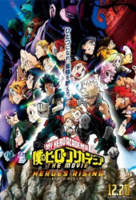
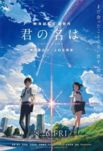

My Hero Academia: O Filme - Ascensão dos Heróis
Izuku "Deku '' Midoriya e seus colegas alunos da Classe 1-A do curso de herói da UA Highforam escolhidos para participar de um programa de segurança na Ilha de Nabu. Para melhorarainda mais suas habilidades e ganhar experiência em atos heroicos mais comuns, os alunosajudam os cidadãos gentis com pequenos serviços e tarefas diárias. Com o baixo índice decriminalidade na comunidade tranquila, tudo parece bem e bem, mas a ascensão de um novo vilãoameaça colocar a coragem dos alunos à prova e desafiar suas capacidades como heróis. Um vilãoimpiedoso chamado Nine está em busca de uma certa "peculiaridade" necessária para cumprir seuplano diabólico - criar uma sociedade onde apenas aqueles com as peculiaridades mais fortesreinam supremos. Como seu ataque à Ilha de Nabu põe em risco a vida dos residentes, protegeros cidadãos se torna a primeira prioridade para a Classe 1-A; derrotar Nove junto com seuscúmplices perversos também é imperativo. Uma estratégia direta é formulada até que um meninochamado Katsuma Shimano, com quem Deku fizera amizade, repentinamente requer proteçãoespecial. Preocupado com o bem-estar do menino, Deku e seus colegas devem agora traçar umplano para garantir a segurança de Katsuma a todo custo. Com Nove causando estragos paraencontrar o catalisador para seus esquemas mal intencionados e os heróis desesperados paradefender Katsuma do perigo, Deku e seus amigos serão capazes de sair vitoriosos, ou seencontrarão incapazes de escapar de uma situação desesperadora?
Kimi No Na Wa
Kimi no Na wa é um filme sobre um garoto e uma garota que durante a passagem de um cometatrocam de corpo. Ela, uma garota que vive numa cidadezinha de fim de mundo, realiza o seusonho de ser um garoto em plena Tokyo. Ele tem a chance de conhecer mais sobre as tradições dopovo e lenda.
Kimetsu no Yaiba Movie: Mugen Ressha-hen

Japão, era Taisho. Tanjiro, um bondoso jovem que ganha a vida vendendo carvão, descobre quesua família foi massacrada por um demônio. E para piorar, Nezuko, sua irmã mais nova e únicasobrevivente, também foi transformada num demônio. Arrasado com esta sombria realidade,Tanjiro decide se tornar um matador de demônios para fazer sua irmã voltar a ser humana, epara matar o demônio que matou sua família. Um triste conto sobre dois irmãos, onde osdestinos dos humanos e dos demônios se entrelaçam , começa agora.